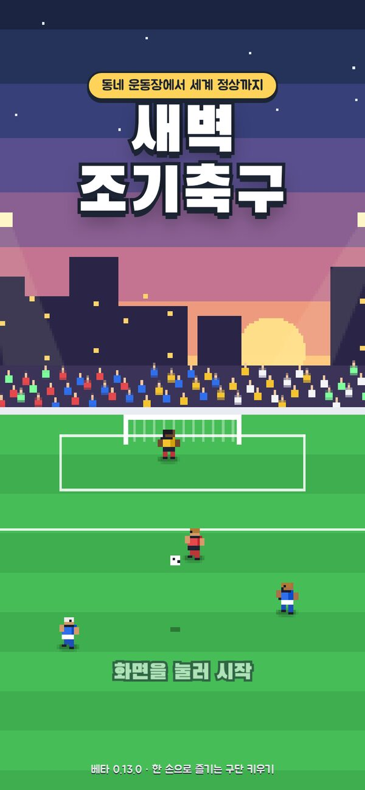
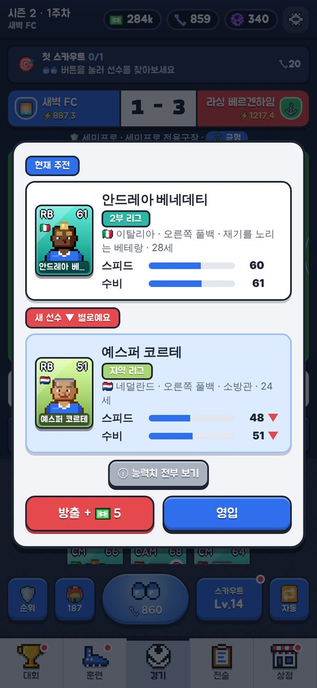
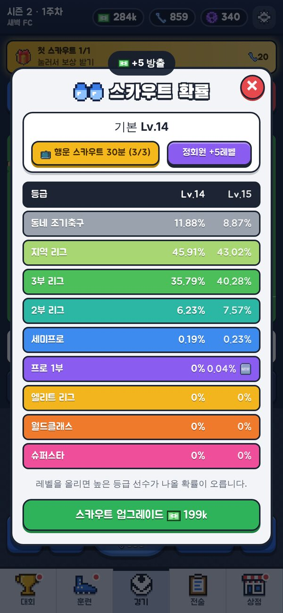
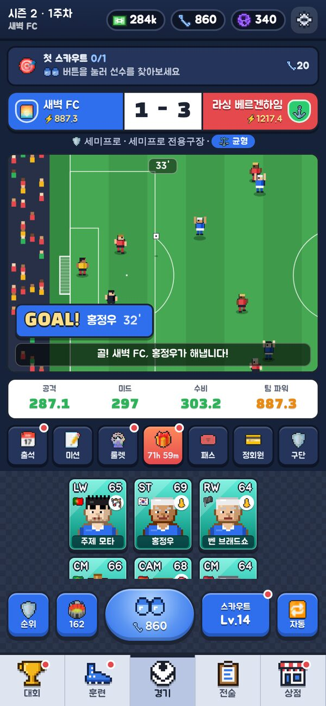
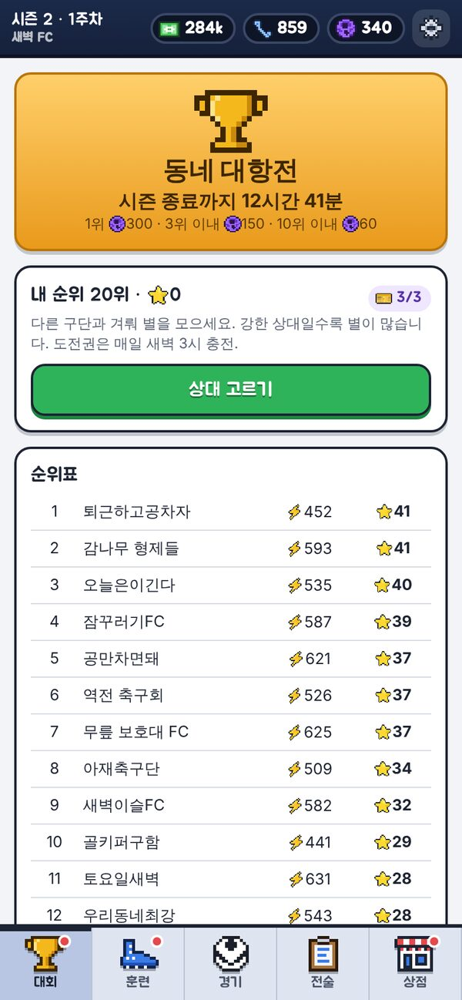
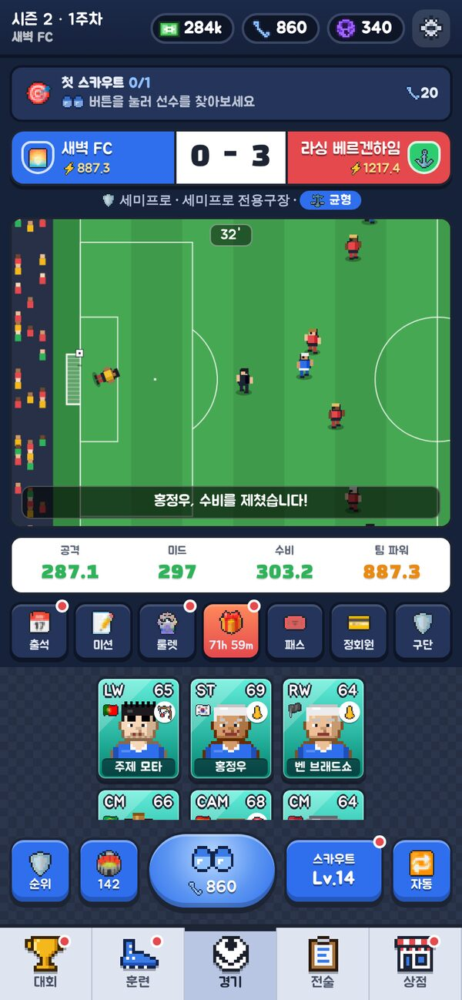
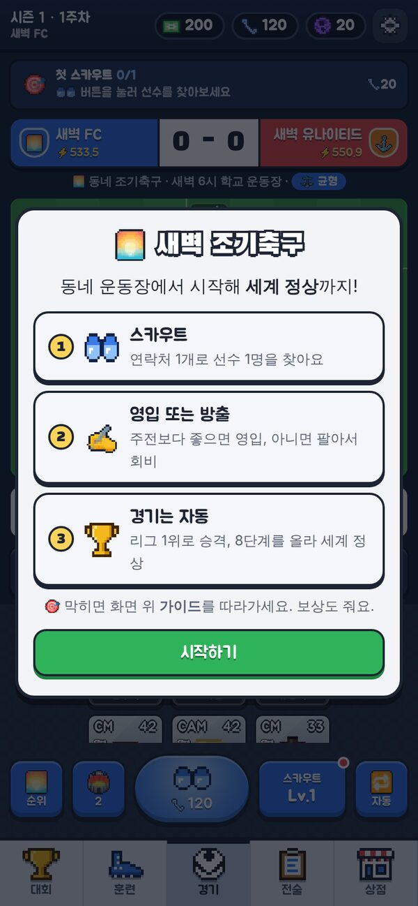
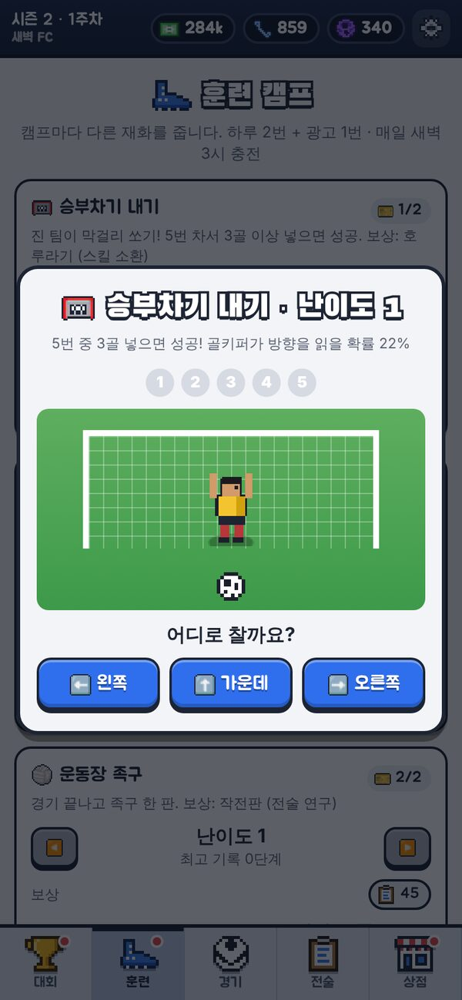
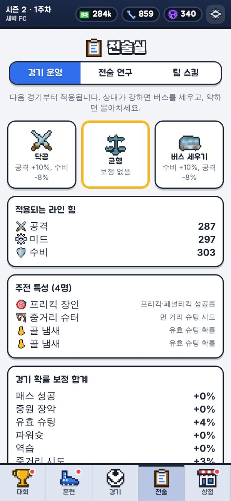
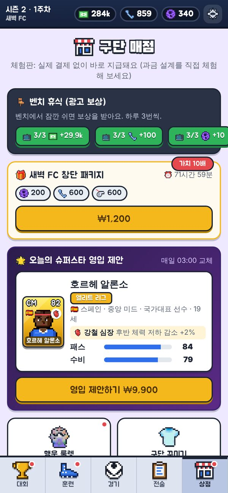

<title>새벽 조기축구 소개</title>
<meta name="claude:viewport-fit-sides" content="cover">
<link rel="preconnect" href="https://fonts.googleapis.com">
<link rel="preconnect" href="https://fonts.gstatic.com" crossorigin>
<link rel="stylesheet" href="https://fonts.googleapis.com/css2?family=Black+Han+Sans&family=Jua&family=Noto+Sans+KR:wght@400;500;700&display=swap">
<style>
/* 레이아웃: 새벽 하늘색 바탕 위에 게임 UI처럼 굵은 외곽선 패널을 세로로 쌓는다. 하나의 새벽 테마로 고정. */
:root {
  --sky: #1b2440;
  --sky-2: #253259;
  --dawn: #ee9a7f;
  --sun: #ffd35a;
  --grass: #47bd58;
  --panel: #f4f6fb;
  --ink: #1d2433;
  --ink-soft: #5b6478;
  --on-sky: #eef1fb;
  --on-sky-soft: #b7bfd8;
  --line: #1d2433;
  --font-display: 'Black Han Sans', 'Jua', 'Apple SD Gothic Neo', sans-serif;
  --font-label: 'Jua', 'Apple SD Gothic Neo', sans-serif;
  --font-body: 'Noto Sans KR', 'Apple SD Gothic Neo', system-ui, sans-serif;
  color-scheme: dark;
}
* { box-sizing: border-box; }
body {
  margin: 0;
  background: var(--sky);
  color: var(--on-sky);
  font-family: var(--font-body);
  font-size: 16px;
  line-height: 1.65;
}
a { color: inherit; }
.wrap {
  max-width: 1080px;
  margin: 0 auto;
  padding-left: max(16px, env(safe-area-inset-left, 0px));
  padding-right: max(16px, env(safe-area-inset-right, 0px));
}
section { padding-block: 56px; }
h1, h2, h3 { font-family: var(--font-display); font-weight: 400; text-wrap: balance; margin: 0; }
h2 { font-size: clamp(28px, 4.5vw, 40px); line-height: 1.15; }
.eyebrow {
  font-family: var(--font-label);
  font-size: 15px;
  color: var(--sun);
  letter-spacing: 0.04em;
  margin: 0 0 8px;
}
.lead { color: var(--on-sky-soft); max-width: 62ch; margin: 12px 0 0; }

/* ── 첫 화면 ── */
.hero {
  background: linear-gradient(180deg, #1b2440 0%, #38407a 38%, #8a5f92 62%, #ee9a7f 86%, #ffc57a 100%);
  padding-block: 48px 0;
  overflow: hidden;
}
.hero-grid { display: grid; grid-template-columns: 1.15fr 0.85fr; gap: 32px; align-items: end; }
.hero-text { padding-bottom: 56px; min-width: 0; }
.pill {
  display: inline-block;
  font-family: var(--font-label);
  font-size: 15px;
  color: var(--ink);
  background: var(--sun);
  border: 2.5px solid var(--line);
  border-radius: 999px;
  padding: 3px 14px;
  box-shadow: 0 3px 0 var(--line);
}
.hero h1 {
  font-size: clamp(64px, 12vw, 128px);
  line-height: 0.95;
  margin: 18px 0 0;
  color: #fff;
  -webkit-text-stroke: 8px var(--line);
  paint-order: stroke fill;
  text-shadow: 0 8px 0 var(--line);
}
.hero p.tagline { font-size: 19px; color: #fff; max-width: 34ch; margin: 22px 0 0; text-shadow: 0 1px 0 rgba(0,0,0,0.3); }
.cta-row { display: flex; flex-wrap: wrap; gap: 12px; margin-top: 26px; }
.btn {
  display: inline-flex; align-items: center; justify-content: center;
  font-family: var(--font-label); font-size: 19px; text-decoration: none;
  padding: 12px 24px; border-radius: 16px; border: 3px solid var(--line);
  box-shadow: inset 0 3px 0 rgba(255,255,255,0.35), 0 4px 0 var(--line);
  transition: transform 0.12s ease, box-shadow 0.12s ease;
}
.btn:hover { transform: translateY(-2px); box-shadow: inset 0 3px 0 rgba(255,255,255,0.35), 0 6px 0 var(--line); }
.btn:active { transform: translateY(3px); box-shadow: inset 0 3px 0 rgba(255,255,255,0.35), 0 1px 0 var(--line); }
.btn:focus-visible { outline: 3px solid #fff; outline-offset: 3px; }
.btn.go { background: #2fbf55; color: #fff; text-shadow: 0 1.5px 0 rgba(0,0,0,0.35); }
.btn.alt { background: var(--panel); color: var(--ink); }
.facts { display: flex; flex-wrap: wrap; gap: 8px 18px; margin: 26px 0 0; padding: 0; list-style: none; font-family: var(--font-label); font-size: 15px; color: #fff; }
.facts li span { color: var(--sun); margin-right: 6px; }
.phone {
  justify-self: center;
  width: min(300px, 100%);
  border: 4px solid var(--line);
  border-bottom: 0;
  border-radius: 34px 34px 0 0;
  padding: 10px 10px 0;
  background: var(--line);
  box-shadow: 0 -10px 50px rgba(0,0,0,0.25);
}
.phone img { display: block; width: 100%; border-radius: 24px 24px 0 0; max-width: 100%; }

/* ── 루프 ── */
.loop { display: grid; grid-template-columns: repeat(4, 1fr); gap: 16px; margin-top: 28px; }
.step {
  background: var(--panel); color: var(--ink);
  border: 3px solid var(--line); border-radius: 18px; box-shadow: 0 4px 0 var(--line);
  padding: 14px; display: flex; flex-direction: column; gap: 10px; min-width: 0;
}
.step .n {
  width: 30px; height: 30px; border-radius: 50%; background: var(--sun); border: 2.5px solid var(--line);
  display: grid; place-items: center; font-family: var(--font-display); font-size: 16px;
}
.step h3 { font-size: 21px; }
.step p { margin: 0; font-size: 14.5px; color: var(--ink-soft); }
.step img { border-radius: 10px; border: 2px solid var(--line); width: 100%; aspect-ratio: 3 / 4; object-fit: cover; object-position: top; max-width: 100%; }

/* ── 리그 사다리 ── */
.ladder-band { background: var(--sky-2); }
.ladder { list-style: none; padding: 0; margin: 28px 0 0; display: grid; gap: 6px; }
.ladder li {
  display: grid; grid-template-columns: 34px minmax(0, 150px) 1fr; gap: 12px; align-items: center;
  font-family: var(--font-label);
}
.ladder .lv { color: var(--on-sky-soft); font-size: 14px; text-align: right; font-variant-numeric: tabular-nums; }
.ladder .tier { font-size: 18px; color: #fff; white-space: nowrap; overflow: hidden; text-overflow: ellipsis; }
.ladder .bar {
  height: 30px; border-radius: 9px; border: 2.5px solid var(--line); box-shadow: 0 3px 0 var(--line);
  display: flex; align-items: center; padding: 0 10px; color: var(--ink); font-size: 14px;
  white-space: nowrap; overflow: hidden; min-width: 0;
}
.ladder-note { color: var(--on-sky-soft); font-size: 14px; margin-top: 16px; }

/* ── 경기 중계 ── */
.split { display: grid; grid-template-columns: 1fr 1fr; gap: 40px; align-items: center; }
.split > * { min-width: 0; }
.shots-pair { display: grid; grid-template-columns: 1fr 1fr; gap: 14px; }
.shot { margin: 0; }
.shot img { width: 100%; border-radius: 18px; border: 3px solid var(--line); box-shadow: 0 5px 0 var(--line); display: block; max-width: 100%; }
.shot figcaption { font-family: var(--font-label); font-size: 14px; color: var(--on-sky-soft); margin-top: 8px; text-align: center; }
.checks { list-style: none; padding: 0; margin: 20px 0 0; display: grid; gap: 12px; }
.checks li { padding-left: 30px; position: relative; color: var(--on-sky); }
.checks li::before {
  content: ''; position: absolute; left: 0; top: 6px; width: 16px; height: 16px; background: var(--grass);
  border: 2.5px solid var(--line); border-radius: 4px; box-shadow: 0 2px 0 var(--line);
}
.checks b { font-weight: 700; color: #fff; }

/* ── 화면 모음 ── */
.gallery {
  display: grid; grid-auto-flow: column; grid-auto-columns: minmax(180px, 220px); gap: 16px;
  overflow-x: auto; padding: 24px 2px 14px; scroll-snap-type: x mandatory;
}
.gallery .shot { scroll-snap-align: start; }

/* ── 숫자 ── */
.stats { display: grid; grid-template-columns: repeat(4, 1fr); gap: 16px; margin-top: 28px; }
.stat {
  background: var(--panel); color: var(--ink); border: 3px solid var(--line); border-radius: 18px; box-shadow: 0 4px 0 var(--line);
  padding: 16px; min-width: 0;
}
.stat b { display: block; font-family: var(--font-display); font-weight: 400; font-size: 34px; line-height: 1.1; font-variant-numeric: tabular-nums; }
.stat span { font-size: 14px; color: var(--ink-soft); }
.made { display: grid; grid-template-columns: repeat(2, 1fr); gap: 14px 32px; margin-top: 28px; }
.made div { min-width: 0; }
.made h3 { font-size: 20px; color: var(--sun); }
.made p { margin: 4px 0 0; color: var(--on-sky-soft); font-size: 15px; }

/* ── 수익 모델 ── */
.bm-band { background: var(--sky-2); }
.table-box { overflow-x: auto; margin-top: 24px; border: 3px solid var(--line); border-radius: 18px; box-shadow: 0 4px 0 var(--line); background: var(--panel); }
table { width: 100%; border-collapse: collapse; color: var(--ink); min-width: 520px; }
th, td { padding: 12px 16px; text-align: left; border-bottom: 1.5px solid #d8dce8; }
th { font-family: var(--font-label); font-weight: 400; font-size: 15px; background: #e6e9f2; }
td.num { font-family: var(--font-display); font-size: 22px; font-variant-numeric: tabular-nums; white-space: nowrap; }
tr:last-child td { border-bottom: 0; }
.bm-cols { display: grid; grid-template-columns: repeat(3, 1fr); gap: 16px; margin-top: 24px; }
.bm-cols div { border-top: 3px solid var(--sun); padding-top: 10px; min-width: 0; }
.bm-cols h3 { font-size: 19px; }
.bm-cols p { margin: 6px 0 0; font-size: 15px; color: var(--on-sky-soft); }

/* ── 다음 계획 + 끝 ── */
.next { list-style: none; padding: 0; margin: 24px 0 0; display: grid; grid-template-columns: repeat(3, 1fr); gap: 16px; }
.next li { background: rgba(255,255,255,0.06); border: 2px dashed var(--on-sky-soft); border-radius: 16px; padding: 16px; min-width: 0; }
.next b { font-family: var(--font-label); font-weight: 400; font-size: 18px; color: #fff; display: block; }
.next span { font-size: 14.5px; color: var(--on-sky-soft); }
.end { background: linear-gradient(180deg, var(--sky) 0%, #47bd58 0%, #3fae4f 100%); color: var(--ink); text-align: center; }
.end h2 { color: #fff; -webkit-text-stroke: 6px var(--line); paint-order: stroke fill; text-shadow: 0 5px 0 var(--line); }
.end p { margin: 14px auto 24px; max-width: 46ch; color: #10331a; font-weight: 500; }
.end p.play-url { margin: 18px auto 0; font-family: var(--font-label); font-size: 17px; color: #10331a; user-select: all; overflow-wrap: anywhere; }
footer { text-align: center; font-size: 13px; color: var(--on-sky-soft); padding-block: 22px; }

.video-box { display: grid; grid-template-columns: minmax(0, 340px) 1fr; gap: 40px; align-items: center; }
.video-box video { width: 100%; max-width: 100%; aspect-ratio: 780 / 1688; border-radius: 22px; border: 4px solid var(--line); box-shadow: 0 6px 0 var(--line); background: var(--line); display: block; }
.video-box ol { margin: 18px 0 0; padding-left: 20px; color: var(--on-sky-soft); display: grid; gap: 6px; }
.video-box ol b { color: #fff; font-weight: 500; font-variant-numeric: tabular-nums; margin-right: 6px; }
@media (max-width: 760px) { .video-box { grid-template-columns: 1fr; } .video-box video { max-width: 340px; margin: 0 auto; } }
@media (max-width: 860px) {
  .hero-grid, .split { grid-template-columns: 1fr; }
  .hero-text { padding-bottom: 8px; }
  .loop, .stats { grid-template-columns: repeat(2, 1fr); }
  .bm-cols, .next { grid-template-columns: 1fr; }
}
@media (max-width: 520px) {
  .loop, .stats, .made { grid-template-columns: 1fr; }
  .ladder li { grid-template-columns: 24px 96px 1fr; gap: 8px; }
  .ladder .tier { font-size: 15px; }
  section { padding-block: 40px; }
}
@media (prefers-reduced-motion: reduce) { .btn { transition: none; } }
</style>

<header class="hero">
  <div class="wrap hero-grid">
    <div class="hero-text">
      <span class="pill">모바일 방치형 축구 구단 키우기</span>
      <h1>새벽<br>조기축구</h1>
      <p class="tagline">새벽 6시 학교 운동장의 동네 아저씨 팀을 이끌고 세계 클럽 결승 무대까지 올라가는 게임입니다.</p>
      <div class="cta-row">
        <a class="btn go" href="https://claude.ai/artifact/Y8hATKHhGQHp29QM7ZUgVM" target="_blank" rel="noopener">지금 바로 플레이</a>
        <a class="btn alt" href="#video">플레이 영상 보기</a>
      </div>
      <ul class="facts">
        <li><span>장르</span>방치형 구단 경영</li>
        <li><span>플랫폼</span>모바일 웹 (설치 없음)</li>
        <li><span>조작</span>한 손, 세로 화면</li>
        <li><span>엔딩까지</span>하루 1시간, 약 5~11주</li>
      </ul>
    </div>
    <div class="phone"></div>
  </div>
</header>

<main>
  <section id="loop">
    <div class="wrap">
      <p class="eyebrow">핵심 재미</p>
      <h2>찾고, 고르고, 지켜보고, 올라간다</h2>
      <p class="lead">한 번 접속하면 몇 분 만에 한 바퀴가 돕니다. 짧게 자주 들어와도, 켜 두고 다른 일을 해도 팀은 계속 자랍니다.</p>
      <div class="loop">
        <div class="step"><span class="n">1</span><h3>스카우트</h3><p>연락처 1개로 선수 1명. 버튼 한 번에 국적, 얼굴, 특성이 다른 선수가 나옵니다.</p></div>
        <div class="step"><span class="n">2</span><h3>영입 또는 방출</h3><p>주전보다 좋으면 영입, 아니면 팔아서 회비를 받습니다. 회비로 스카우트 레벨을 올립니다.</p></div>
        <div class="step"><span class="n">3</span><h3>자동 경기 관전</h3><p>90초짜리 경기가 TV 중계처럼 흘러갑니다. 해설과 점수가 화면 장면과 같은 순간에 바뀝니다.</p></div>
        <div class="step"><span class="n">4</span><h3>승격</h3><p>18라운드 리그에서 1위를 하면 다음 무대로. 경기장, 관중, 상대가 함께 바뀝니다.</p></div>
      </div>
    </div>
  </section>

  <section class="ladder-band" id="video">
    <div class="wrap video-box">
      <video src="trailer.mp4" poster="img/poster.jpg" controls muted playsinline preload="metadata"></video>
      <div>
        <p class="eyebrow">플레이 영상 · 67초</p>
        <h2>처음 켜서 첫 승격까지</h2>
        <p class="lead">실제 게임 화면을 그대로 녹화했습니다. 소리 없이 녹화했고, 게임 안에서는 효과음과 관중 함성이 나옵니다. 가로 16:9 버전과 30초 요약본도 함께 제출할 수 있습니다.</p>
        <ol>
          <li><b>0:00</b>타이틀 화면과 세 장짜리 튜토리얼</li>
          <li><b>0:08</b>첫 스카우트, 영입과 방출</li>
          <li><b>0:15</b>중계처럼 흘러가는 경기와 선제골</li>
          <li><b>0:31</b>스카우트 확률표</li>
          <li><b>0:38</b>훈련 캠프 승부차기</li>
          <li><b>0:47</b>전술실과 동네 대항전</li>
          <li><b>0:53</b>시즌 1위, 다음 무대로 승격</li>
        </ol>
      </div>
    </div>
  </section>

  <section>
    <div class="wrap">
      <p class="eyebrow">성장의 지도</p>
      <h2>운동장에서 세계 결승까지, 9개의 무대</h2>
      <p class="lead">무대가 오를수록 관중석이 채워지고 함성이 커집니다. 처음엔 몇 명 없던 관중이 마지막엔 경기장을 가득 메웁니다.</p>
      <ol class="ladder">
        <li><span class="lv">1</span><span class="tier">동네 조기축구</span><span class="bar" style="background:#9aa3ad;width:22%">새벽 6시 학교 운동장</span></li>
        <li><span class="lv">2</span><span class="tier">지역 리그</span><span class="bar" style="background:#a8d672;width:30%">구민 체육공원</span></li>
        <li><span class="lv">3</span><span class="tier">3부 리그</span><span class="bar" style="background:#4cbf5a;width:39%">시립 종합운동장</span></li>
        <li><span class="lv">4</span><span class="tier">2부 리그</span><span class="bar" style="background:#2bb7a3;width:48%">프로 2부 홈구장</span></li>
        <li><span class="lv">5</span><span class="tier">세미프로</span><span class="bar" style="background:#3d8bef;width:57%">세미프로 전용구장</span></li>
        <li><span class="lv">6</span><span class="tier">프로 1부</span><span class="bar" style="background:#8a5cf0;width:66%">3만 석 프로 경기장</span></li>
        <li><span class="lv">7</span><span class="tier">엘리트 리그</span><span class="bar" style="background:#f2b51d;width:76%">유럽 명문 구장</span></li>
        <li><span class="lv">8</span><span class="tier">월드클래스</span><span class="bar" style="background:#f07a2c;width:88%">대륙 챔피언스 무대</span></li>
        <li><span class="lv">9</span><span class="tier">슈퍼스타</span><span class="bar" style="background:#ef4f9a;width:100%">세계 클럽 결승 무대</span></li>
      </ol>
      <p class="ladder-note">막대 길이는 무대별 관중석이 차는 정도를 대략 나타냅니다. 선수 능력치 범위는 동네 30~46에서 슈퍼스타 88~99까지 올라갑니다.</p>
    </div>
  </section>

  <section>
    <div class="wrap split">
      <div>
        <p class="eyebrow">가장 공들인 부분</p>
        <h2>결과만 보여주지 않고, 경기를 보여줍니다</h2>
        <p class="lead">경기 결과를 먼저 계산하고, 그 기록대로 선수 22명과 공이 실제 축구처럼 움직입니다. 숫자로 끝나는 방치형 게임과 다른 지점입니다.</p>
        <ul class="checks">
          <li><b>빌드업과 압박.</b> 공을 가진 팀은 짧은 패스로 전진하고, 수비는 가장 가까운 선수가 공과 골대 사이를 막아섭니다.</li>
          <li><b>찬스의 순서.</b> 침투, 박스 안 패스, 슛. 골이면 키퍼가 반대쪽으로 몸을 날리고 빗나가면 골킥으로 이어집니다.</li>
          <li><b>중계 카메라.</b> 공을 따라가다 골문 근처에서 확대되고, 킥오프나 프리킥에서는 방송처럼 화면이 짧게 끊깁니다.</li>
          <li><b>세트피스와 판정.</b> 반칙, 옐로·레드카드, 프리킥 수비벽, 페널티킥까지 장면으로 나옵니다.</li>
        </ul>
      </div>
      <div class="shots-pair">
        <figure class="shot"><figcaption>찬스 직전</figcaption></figure>
        <figure class="shot"><figcaption>1.3초 뒤, 골</figcaption></figure>
      </div>
    </div>
  </section>

  <section class="ladder-band">
    <div class="wrap">
      <p class="eyebrow">화면 둘러보기</p>
      <h2>다섯 개의 탭, 매일 할 일</h2>
      <div class="gallery">
        <figure class="shot"><figcaption>세 장으로 끝나는 튜토리얼</figcaption></figure>
        <figure class="shot"><figcaption>훈련: 승부차기 내기</figcaption></figure>
        <figure class="shot"><figcaption>전술: 경기 운영과 연구</figcaption></figure>
        <figure class="shot"><figcaption>대회: 다른 구단과 별 경쟁</figcaption></figure>
        <figure class="shot"><figcaption>상점: 광고 보상과 패키지</figcaption></figure>
      </div>
    </div>
  </section>

  <section>
    <div class="wrap">
      <p class="eyebrow">만든 방식</p>
      <h2>그림도 소리도 전부 코드로</h2>
      <div class="stats">
        <div class="stat"><b>205KB</b><span>게임 전체가 파일 하나. 첫 화면까지 바로 뜹니다.</span></div>
        <div class="stat"><b>0개</b><span>사용한 그림·소리 파일. 모두 실행할 때 그리고 합성합니다.</span></div>
        <div class="stat"><b>60fps</b><span>휴대폰 CPU를 4배 느리게 흉내 낸 환경에서 측정.</span></div>
        <div class="stat"><b>82개</b><span>게임 규칙을 지키는 자동 테스트. 모두 통과.</span></div>
      </div>
      <div class="made">
        <div><h3>픽셀 선수 얼굴</h3><p>피부, 머리 모양, 수염, 눈썹, 입, 액세서리를 조합해 선수마다 다른 얼굴을 만듭니다. 유니폼 색을 바꾸면 카드와 경기장 선수가 함께 바뀝니다.</p></div>
        <div><h3>합성 사운드</h3><p>호루라기, 킥, 골 팡파르를 실시간으로 만듭니다. 관중 함성은 찬스가 오면 커지고 골에서 터집니다.</p></div>
        <div><h3>시뮬레이터로 맞춘 밸런스</h3><p>가상의 플레이어가 하루 1시간씩 엔딩까지 플레이하는 시뮬레이터를 만들어, 광고와 결제 여부에 따른 진행 속도를 맞췄습니다.</p></div>
        <div><h3>끊겨도 이어지는 진행</h3><p>앱을 닫아 두면 그동안 열린 경기와 운동장 수익을 다시 열 때 정산합니다. 저장은 기기에 자동으로 되고, 저장 코드로 다른 기기에 옮길 수 있습니다.</p></div>
      </div>
    </div>
  </section>

  <section class="bm-band">
    <div class="wrap">
      <p class="eyebrow">수익 모델</p>
      <h2>돈을 안 써도 끝까지, 쓰면 더 빨리</h2>
      <p class="lead">결제는 시간을 줄여 줄 뿐 결과를 사지 않게 설계했습니다. 아래는 하루 1시간(15분씩 4번) 플레이를 가정한 시뮬레이터 결과입니다.</p>
      <div class="table-box">
        <table>
          <thead><tr><th>플레이 방식</th><th>엔딩까지</th><th>범위</th><th>결제</th></tr></thead>
          <tbody>
            <tr><td>광고 안 봄</td><td class="num">약 75일</td><td>44~88일</td><td>없음</td></tr>
            <tr><td>광고 봄</td><td class="num">약 55일</td><td>43~65일</td><td>없음</td></tr>
            <tr><td>광고 + 시즌 패스 + 정회원</td><td class="num">약 35일</td><td>25~40일</td><td>약 5~6만 원</td></tr>
          </tbody>
        </table>
      </div>
      <div class="bm-cols">
        <div><h3>보상형 광고</h3><p>운동장 수익 추가 수령, 30분 행운 스카우트, 오프라인 수익 2배. 하루 횟수 제한이 있어 강요하지 않습니다.</p></div>
        <div><h3>시즌 패스 · 정회원</h3><p>이긴 경기마다 열리는 60칸 패스, 매일 연락처와 스카우트 확률을 올려 주는 주간 정회원.</p></div>
        <div><h3>패키지</h3><p>창단, 승격, 복귀 패키지는 경기 몇 판을 본 뒤에야 등장합니다. 첫 화면에 결제창을 띄우지 않습니다.</p></div>
      </div>
    </div>
  </section>

  <section>
    <div class="wrap">
      <p class="eyebrow">다음 계획</p>
      <h2>출시까지 남은 일</h2>
      <ul class="next">
        <li><b>친구 리그</b><span>친구 구단과 같은 리그에서 시즌을 치르는 비동기 대전.</span></li>
        <li><b>실제 결제와 광고 연동</b><span>지금은 체험판이라 결제 버튼을 누르면 바로 지급됩니다.</span></li>
        <li><b>앱 마켓 출시</b><span>웹 그대로 감싸 안드로이드와 iOS 앱으로 배포.</span></li>
      </ul>
    </div>
  </section>

  <section class="end">
    <div class="wrap">
      <h2>새벽 6시, 운동장에서 만나요</h2>
      <p>설치도 회원가입도 없이 링크 하나로 바로 시작합니다. 휴대폰에서 세로로 열면 가장 좋아요.</p>
      <a class="btn alt" href="https://claude.ai/artifact/Y8hATKHhGQHp29QM7ZUgVM" target="_blank" rel="noopener">게임 열기</a>
      <p class="play-url">claude.ai/artifact/Y8hATKHhGQHp29QM7ZUgVM</p>
    </div>
  </section>
</main>
<footer class="wrap">새벽 조기축구 베타 0.13.0 · 글꼴: Black Han Sans, Jua, Noto Sans KR (SIL Open Font License)</footer>
